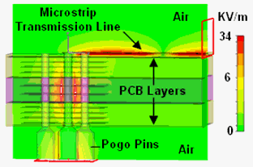

Pogo pad and via design
The pogo pad and via connect the pogo pin to the signal trace on the DUT board. The design of the pogo pad and of the pogo via depends on the type of the pogo pin and on the stackup of the DUT board.
When designing pogo pads and pogo vias for the V93000 you must respect certain mechanical requirements. You also have some variables that can be used to improve the pogo via performance. Both are listed below:
| Minimum pad size: | 56 mil (~1.4 mm) Recommendation: For pogo pin landing holes of digital and analog channels use a pad size of at least 1.4 mm to 1.5 mm, for utility and DPS channels at least 1.6 mm to 1.8 mm, with a maximum hole diameter of 0.7 mm. A smaller pad size will cause contact problems with the DUT interface. |
| Signal pogo via drill size: | 26 + 1/-3 mil finished hole size (~0.7 mm) |
| Minimum pogo via length: | 13 mil (~0.33 mm) |
| Number of adjacent ground pogo vias: | 4 |
| Signal via to ground via pitch: | 100 mil |
| Removal of non-functional pads: | Yes / No |
| Back drilling: | Yes / No |
| Ground plane clearance or antipad: | variable |
| Power plane clearance or antipad: | >= ground plane clearance |
| Ground via thermal straps: | No (direct connect to ground plane) |
| Hard Au plating | Min. 30 µinches, Knoop hardness 130-200 |
A typical approach for a pogo via design is to optimize the via structure through an electromagnetic (EM) field simulation. The simulation uses a 3D model of the pogo pin and pogo via as shown in the figure below.

For more information on this approach you may consult the following articles:
- Jose Moreira, Ming Tsai, Jonathan Kenton, Heidi Barnes, Don Faller, "PCB Loadboard Design Challenges for Multi-Gigabit Devices in Automated Test Applications", DesignCon 2006, Santa Clara USA.
- H. Barnes, J. Moreira, H. Ossoinig, M. Wollitzer, T. Schmid, M. Tsai, "Development of a Pogo Pin Assembly and Via Design for Multi-Gigabit Interfaces on Automated Test Equipment", Asia-Pacific Microwave Conference, APMC 2006, Yokohama Japan.
An electromagnetic field simulation is time consuming and not required for most applications. A pogo via design optimized for a given stackup can be reused on a different stack-up. Experience shows that the performance of the via will not change.
Functional changes
- Introduced before SmarTest 6.3.2